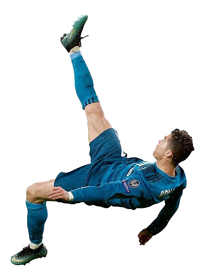
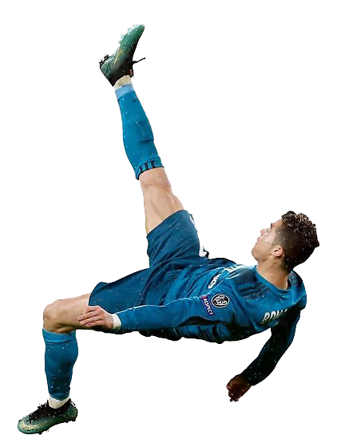
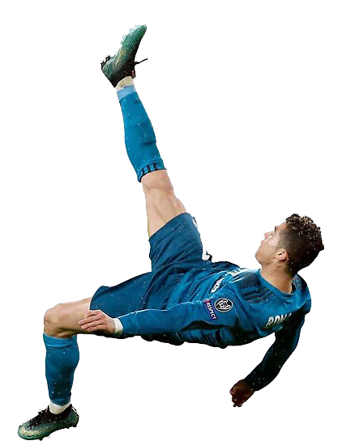
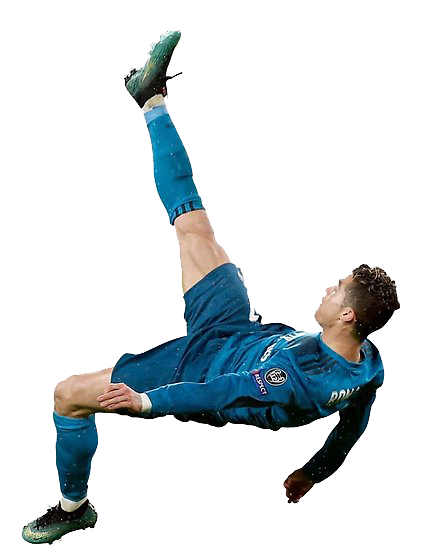

Soccer
Association football, more commonly known as football or soccer,[a] is a team sport played with a spherical ball between two teams of eleven players. It is played by 250 million players in over 200 countries and dependencies, making it the world's most popular sport. The game is played on a rectangular field called a pitch with a goal at each end. The object of the game is to score by moving the ball beyond the goal line into the opposing goal.
Association football is one of a family of football codes, which emerged from various ball games played worldwide since antiquity. The modern game traces its origins to 1863 when the Laws of the Game were originally codified in England by The Football Association.
Players are not allowed to touch the ball with hands or arms while it is in play, except for the goalkeepers within the penalty area. Other players mainly use their feet to strike or pass the ball, but may also use any other part of their body except the hands and the arms.
The team that scores most goals by the end of the match wins. If the score is level at the end of the game, either a draw is declared or the game goes into extra time or a penalty shootout depending on the format of the competition. Association football is governed internationally by the International Federation of Association Football (FIFA; French: Fédération Internationale de Football Association), which organises World Cups for both men and women every four years.